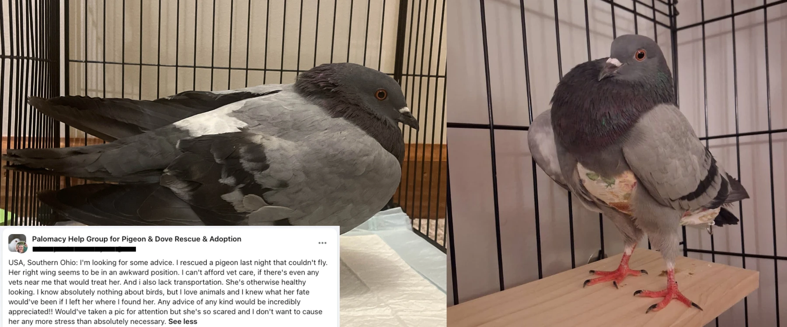
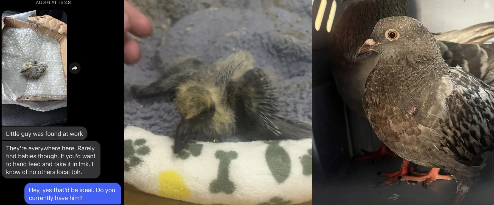
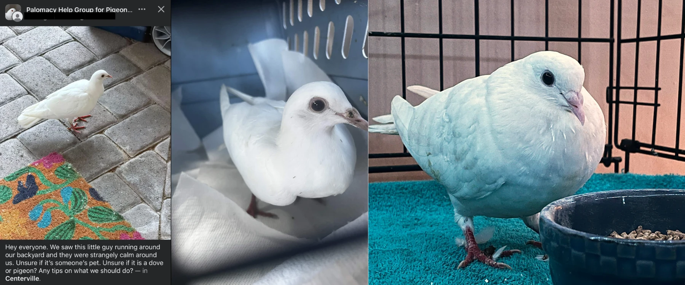

October 30, 2026
Marilynn Walz
This year, we want to take a moment to celebrate the pigeons who got their second chance in 2026. Seeing as we're on hiatus until 2027, like many rescues are this time of year, we're happy to make this page while we wait until spring to take in more pigeons in need.
The three birds below don't include our two earlier rescues from 2025, before we started rescuing as Second Chance Pigeon Rescue: Korys (a lost racer who passed overnight; very skinny, suspected URI) and Goose (broken leg, URI, lice).
You'll notice something all three of these birds have in common: Palomacy. Brute and Caviar were both posted in the Palomacy Help Group for Pigeon & Dove Rescue & Adoption. Ranch was taken in via direct message, but the finder had contacted me before about a pigeon who passed before they could be transferred to me. They had posted that pigeon in the Palomacy Help Group too, which is how I got their contact!

Came in underweight, with feather lice and a broken wing. Left = the finder asking for rescue, and Brute's intake photo. Right = Brute in his new home, wearing a pair of pigeon pants.

At a week old, Ranch was found at someone's workplace and brought to us (left)! Center = intake photo. She was then raised by a foster pair. Right = Ranch just before being picked up by her new adopter.

Skinny and covered in feather lice, but otherwise looked okay. Left = the finder asking for rescue. Center = intake photo, just after being moved to a carrier in the car. Right = Caviar now!
None of this happens alone. Thank you to the finders who stopped for a bird in need. If you'd like to help more pigeons in 2027, you can adopt or donate!
This page is also here to address rumors of me "buying pigeons and faking rescue stories." I've taken in three birds in 2026, with proof that they're rescues. Rumors don't hold up when the only evidence is lies from a group who hates me for wanting to dedicate more time to rescue.
Have a great rest of your year, everybody!